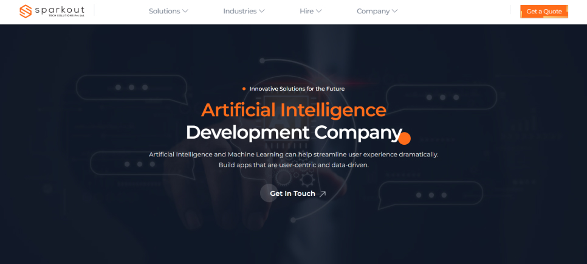
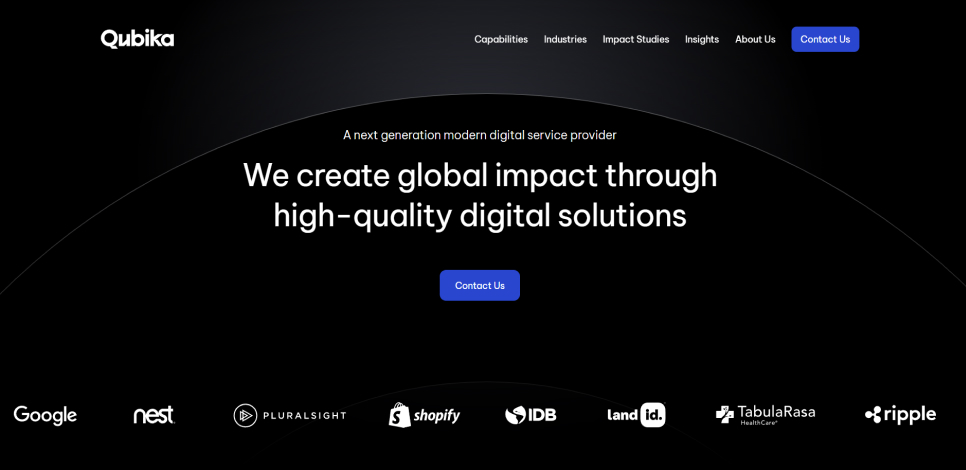
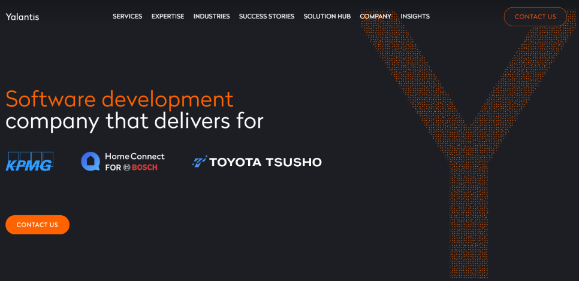
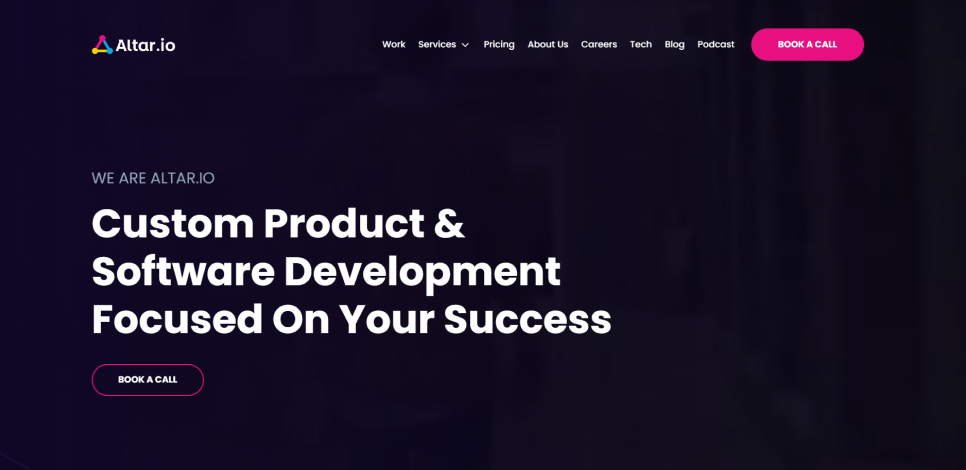
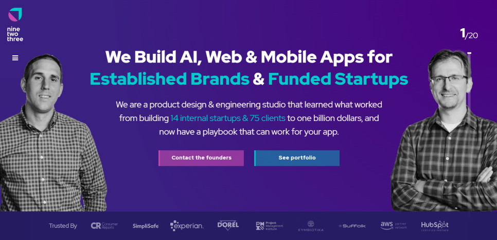
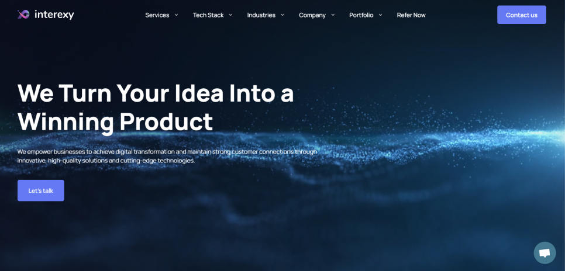
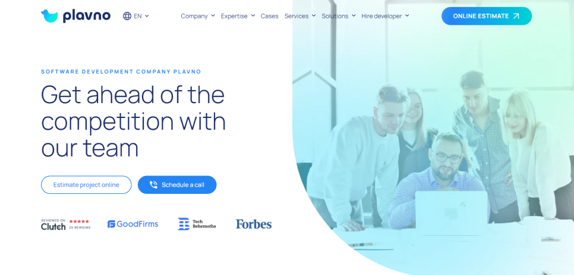
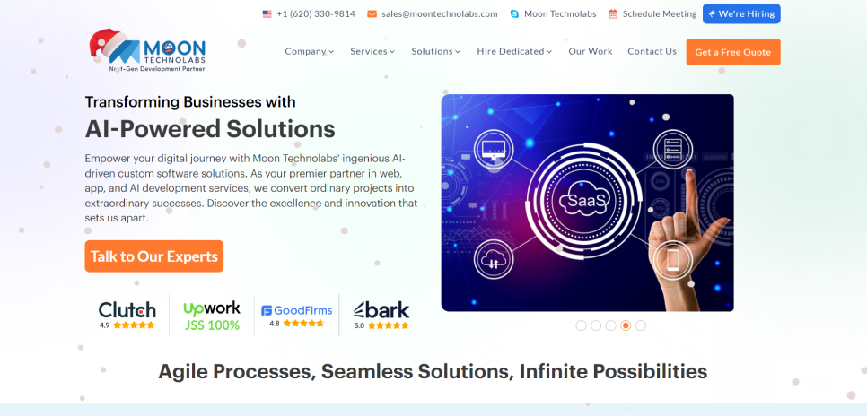
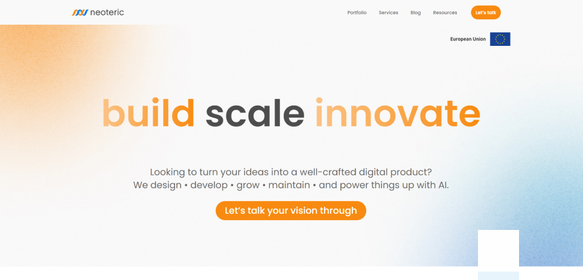

If you’ve found this blog, then I would assume that you have a business and you have understood the value that AI can bring to your organization. However, building solutions like this takes experts, and you need to find the right pick among the Top 10 AI companies in 2026 to help you do this. I understand that this task can be daunting, and this is exactly why I have compiled a list of the 10 best AI companies that can help you create solutions with this cutting-edge technology. The major thing here is to understand that this is not a contest, and the companies that you can find in our list are of high qualit,y and you can get some great results from them. However, it is also useful to understand that some companies on our list of Top 10 AI companies in 2026 will have specializations which may align with your goals. Choosing the right pick from the list considering your goals, will help you serve your customers better with a great solution.
Let’s get started.
Things to Consider Before Choosing an AI Development Company
There are a few things to consider before you hire an AI development company for building your AI agents or applications. The first thing is, of course, their expertise in the field of AI. AI is a complex piece of technology, and there are many aspects of AI, like the infrastructure, that you may not know about. The company you choose should be experienced in building complex solutions and also should understand the nuances of using these solutions. Our list of Top 10 AI companies in 2026 is a starting point for you, and we will cover what these companies can do, what they are good at and what their pros and cons are so that you can make the right decision for your organization.
The other consideration is their track record because you want your technology partner to have worked on similar projects before, and if they are experts in the industry that you’re working in, then that would be the best situation. We will cover these specific details as we go through each company. But the last and probably the most important thing when choosing from our list of Top 10 AI companies in 2026 is that the company you choose should be a great culture fit for your company. Because the company you pick will probably travel with you for the long term, and you want an organization that aligns with your culture and standards.
1. Sparkout Tech

Sparkout Tech Solutions, also called Sparkout for short, is an established software development company that specializes in building highly scalable and user-friendly AI products. Sparkout’s expertise includes machine learning, deep learning, natural language processing, computer vision, predictive analytics, process automation and much more. Sparkout is one of the Top 10 AI companies in 2026, and can help you build solutions like chatbots, sales and automation tools, content creation tools and many more solutions. When it comes to the industries that Sparkout serves, it is also quite extensive, which includes healthcare, fintech, logistics, entertainment and government. Sparkout has a reputation for building solutions that are innovative and will work closely with your business to get a grasp of your nuances and build tailored solutions that suit your needs and business goals.
The other highlighting feature about Sparkout is its emphasis on building solutions that are user-friendly and with an efficient user experience. Sparkout as one of the Top 10 AI companies in 2026, also has a highly experienced team which consists of industry-leading AI and ML engineers, architects, user experience designers and project managers who have years of experience and impressive track records building and scaling applications using AI. This makes Sparkout the go to service provider for businesses around the world when it comes to AI development. Like many of the companies on our list Sparkout is a worldwide service provider and can help you build your products no matter where you are located.
Pros:
- Sparkout, as one of the Top 10 AI companies in 2026, has great expertise in multiple AI-related technologies.
- Sparkout’s emphasis on innovation and creating a cohesive user experience is high when it comes to AI development.
- A highly trained and experienced team of various industry-leading resources.
- Experience in working with a wide range of industries like healthcare, fintech, logistics and many more.
Cons:
- For complex projects with deep levels of customization the cost for development could be on the higher side if you’re a tight budget.
- Since the services are comprehensive, the timelines for project delivery would depend on the scale of the product.
Website: www.sparkouttech.com
2. Qubika

In our list of Top 10 AI companies in 2026, Qubika stands strong as an AI company that puts a lot of emphasis on building solutions that are innovative and have a great design. Their approach is very much user-centric, and they can help you build bespoke solutions for various industries and use cases. The industries that they serve include finance, healthcare, retail and logistics. Their process involves using the most cutting-edge technologies like AI, IoT and blockchain to tackle the unique challenges of businesses. The process they follow is also quite comprehensive when it comes to product development and will cover everything from the initial consultation and ideation to building full-scale solutions and maintenance after launch as one of the Top 10 AI companies in 2026.
Their team is also known for their high levels of collaboration, and its roster is full of leading engineers and designers who work closely with their clients and implement the best practices in the industry. Their development process is agile, and this translates into everything, including their workflows. They have a very strong reputation for building AI systems that are scalable, secure and high performing and make them one of the preferred service providers for startups as well as enterprises.
Pros:
- They can offer you highly customized solutions that are tailored to suit the specific and diverse needs of your business.
- As one of the Top 10 AI companies in 2026, their industry expertise is very strong and includes working with AI, IoT and blockchain.
- Their project management is powered by agile methodologies, which could contribute to faster delivery times.
Cons:
- When it comes to the cost estimates, their initial quotes can change depending on how extensive and complex your app development process is.
- Their team is not as big as some of the other companies, which could mean that larger projects could take longer to develop.
- Their onboarding process is quite comprehensive and might seem like a long process for some businesses.
Website: www.qubika.com
3. Yalantis

As one of the Top 10 AI companies in 2026, Yalantis is a name that is globally recognized for software development, and they can offer you software solutions that are secure and scalable. Their expertise is quite wide, and they can help you build mobile and web apps, enterprise software, and are experienced in API integration. When you look at the industries they serve, you can see that their portfolio contains leading brands in industries like healthcare, real estate and retail. Their approach is always customer first, and this has given them a great reputation for building ecosystems that are robust and tailored to the unique needs of their clients, being among the Top 10 AI companies in 2026.
They also have a very strong team of industry-leading developers with experience in building and scaling solutions across various sectors. Their team’s major focus is on creating advanced applications using technologies such as natural language processing, predictive analytics and computer vision. This ensures that your business is using the latest in AI technology and can be competitive in the market. Their commitment to providing amazing solutions is evident in the fact that they have the ability to turn complex problems into scalable and efficient solutions.
Pros:
- They have the capability to work with advanced technologies as one of the Top 10 AI companies in 2026, which include NLP, predictive analytics and computer vision.
- Their expertise is cross-industry industry and they have specialities in healthcare, retail and logistics.
- Their reputation is also very noteworthy, and their portfolio contains some of the biggest brands in the world.
Cons:
- Their focus on newer clients may take some time when the demand is high.
- Their solutions are largely premium, which may not suit your needs if you’re a smaller business.
- Since their solutions are premium, some of them might require you to have some pre-existing knowledge about AI technologies.
Website: www.yalantis.com
4. Altar.io

Altar is an interesting pick for our list, and they are one of the Top 10 AI companies in 2026 that can provide you with solutions that are cutting-edge and at the same time powerful, scalable and intelligent. They work with both startups and enterprises alike, which is a great thing for accessibility, and you can build AI solutions for your business regardless of your size. Their major focus when building AI solutions is to create products that can help you optimize your business performance and customer engagement. Additionally, the expertise they have is also quite wide and includes machine learning, deep learning and data analytics. Their focus as one of the Top 10 AI companies in 2026 is to create AI powered applications that tackle real world problems while maintaining a highly frictionless user experience.
The list of industries they work with is quite extensive and includes the likes of fintech, edtech, healthtech and e-commerce. Their solutions are known for helping businesses automate their process, predict trends and improve their decision-making process. They also have an agile approach to AI development, which makes sure that you can make rapid iterations and enhancements to your products. Their process is also highly collaborative and provides extensive support for you throughout the development lifecycle.
Pros:
- As one of the Top 10 AI companies in 2026, their services range from end to end and include AI consulting, design, development and deployment.
- Their expertise runs wide across many industries like fintech, edtech and healthtech.
- Their approach to project management is agile which is great for flexile interactions and faster delivery times.
Cons:
- Their major presence is in Portugal which could be a barrier if you are outside of Europe.
- Their services are comprehensive and premium which could be a barrier for smaller businesses with a smaller budget.
- Some custom solutions may require you to have elaborate infrastructure which could be an added cost for businesses.
Website: www.altar.io
5. NineTwoThree

NineTwoThree is a highly reputed organization and one of the Top 10 AI companies in 2026 which focuses on building smart solutions that have the capabilities to improve your customer engagement and operational efficiency They have a major presence in Boston and their services are quite comprehensive with the likes of machine learning, natural language processing and intelligent automation. They have a great array of services for a wide range of industries which include healthcare, fitness and e-commerce with a keen focus on building solutions that streamline your internal processes and provide you with actionable insights. At the crux of their abilities as one of the Top 10 AI companies in 2026 is their emphasis on integrating AI with user centric design principles which enhance the user experience of your applications.
They also have a strong focus on building AI solutions using agile methodologies which allows their team to be highly responsive especially when it comes to client feedback. This allows them to make real time adjustments to your products during the development process so that they align closely with the goals of your business. Their focus on long term partnership also ensures that you receive continuous support even after they deliver your AI solutions and enables you to stay ahead of the competition.
Pros:
- As one of the Top 10 AI companies in 2026 their focus on user centric AI design is deep and can build you solutions that resonate with your end users.
- They also have a very strong industry focus on the likes of healthcare hotness and e-commerce.
- Their project management approach is agile which makes it easy for you to make quick iterations and adjustments to your product during the development process.
Cons:
- Their solutions when it comes to AI development is quite premium which could be a barrier if you are on a tighter budget.
- Their major focus being on specific industries as one of the Top 10 AI companies in 2026 could mean that their focus in other areas may be limited.
- For you to effectively implement their advanced solutions you may need technical resources.
Website: www.ninetwothree.co
6. Interexy

Interexy is well known to be one of the leading development companies in the AI space and their specializations include building advanced machine learning solutions, artificial intelligence consulting and custom software development. Their presence is very strong in Miami and they work with businesses in diverse industries like blockchain, healthcare and fintech. They also have a stellar team of data scientists and machine learning engineers as one of the Top 10 AI companies in 2026 and are known for working closely with their clients to ensure that the AI solutions they build are scalable and at the same time align with your business goals.
Their experts build cutting edge solutions for businesses and help businesses automate their processes, enhance their user engagement and create predictive models that can improve the decision making process. Their major area of focus is on full stack development so they can help you build solutions from the initial conceptualization stage to full scale deployment and support after delivery. Their major highlighting feature as one of the Top 10 AI companies in 2026 is their ability to combine AI with other emerging technologies like blockchain.
Pros:
- They are well known for combining AI with other innovative technologies like blockchain and IoT for their solutions.
- Their expertise also spans across industries like healthcare, blockchain and fintech.
- Their services are full cycle which starts from the concept development stage to the deployment and maintenance.
Cons:
- Their services are also premium and comprehensive which could be a bit steep in terms of the budget for small businesses.
- Their solutions as one of the Top 10 AI companies in 2026 are comprehensive and could require significant infrastructure and technical expertise for you to manage.
- Since their presence is majorly in the US you may have to consider communication challenges if you’re located in other parts of the world.
Website: www.interexy.com
7. Avkalan.ai
Avkalan is another strong name in the AI development space and their focus is on creating solutions that are innovative for multiple industries. Their specialties include AI powered automation, machine learning, predictive analytics and natural language processing. Their industries of focus also range wide as one of the Top 10 AI companies in 2026 which include manufacturing, finance and healthcare. Their major goal is to help businesses like you streamline your operations. Enhance your customer experience and drive decision making that’s data driven. Avkalan as a company has a strong reputation for building AI models that are quite sophisticated and designed to help you improve your business’s efficiency and reduce its operational costs.
Additionally, they have a stellar team of AI engineers who will work closely with you and your business and create customized AI models that meet the specific needs of your business. As one of the Top 10 AI companies in 2026 this helps them make sure that the solutions they build for you are scalable and at the same time sustainable. One major problem that businesses face with AI is the learning curve after you’ve implemented it. However, Avakalan has that part covered too because they provide AI training services which helps you adopt AI technologies seamlessly and manage them on your own without having to go back and forth between their expert team.
Pros:
- Their industry expertise is quite comprehensive and covers multiple industries like manufacturing, finance and healthcare.
- They are also known for building custom AI models that are tailored to align with the specific business objectives of their clients as one of the Top 10 AI companies in 2026.
- The AI training services they provide are quite unique and can help you easily adapt to AI technologies and manage them by yourself.
Cons:
- The implementation time for complex solutions could be a consideration and if you have a highly complex project then it might take longer to integrate completely.
- Since they provide custom and tailored AI development services their cost for development could be on the higher side if you're a smaller business with a limited budget.
- Since they build complex AI solutions for their clients you may need strong data infrastructure to deploy the AI models effectively.
Website: www.avkalan.ai
8. Plavno

Plavno is one of the top 10 AI companies in 2026 and their specialties include building custom machine learning solutions, intelligent automation and data driven analytics. Their major presence is in the UK and they help businesses use the true potential of their data through the development of sophisticated AI systems that can seamlessly predict trends, automate tasks and improve the efficiency of your business’s operations. They are also well known for creating highly scalable AI solutions across multiple industries which include retail, logistics and manufacturing. The major feature that sets Plavno apart from their competitors is that they emphasize highly on creating solutions that are customized and designed to tackle the unique challenges you face in your business.
As one of the top 10 AI companies in 2026 they have a great team of leading engineers who work closely with you to understand the specific pain points of your business and deliver AI models that are tailored to your business and seamlessly integrate with the systems you are using already. They have a great reputation for building solutions that provide actionable insights using advanced data analytics and real time reporting. Additionally, they have a keen focus on delivering value for the long term and ensure that the AI solutions they build are designed to evolve with the needs of your business. Their approach to AI as one of the top 10 AI companies in 2026 is both innovative and pragmatic which ensures that your business achieves measurable results while keeping the risks minimum.
Pros:
- Their speciality is in creating customized solutions that are tailored to the unique needs of your business.
- They also have strong data analytics capabilities and can provide you with solutions that offer actionable insights and real time reporting.
- The major highlight with them is that their solutions are designed to be future proof and will be scalable according to the growth of your business.
Cons:
- As you can expect their services as one of the top 10 AI companies in 2026 are premium and may be cost prohibitive for smaller businesses.
- Their major area of focus and presence is in and around the UK region which could be a barrier if you operate outside of the region.
- Their onboarding process for custom projects could be on the longer side and may take time to fully develop and deploy.
Website: www.plavno.io
9. Moon Technolabs

Moon Technolabs is renowned globally as a high quality provider of AI development services and their expertise ranges wide with the likes of machine learning, deep learning and NLP solutions as part of the top 10 AI companies in 2026 list we are talking about. Their major presence in the US region and they work with businesses that span across a wide variety of sectors like healthcare, education and e-commerce among many others. They focus on delivering solutions using AI that help you automate your repetitive tasks, predict future outcomes and enhance your customer engagement. Their emphasis is on helping you build advanced AI solutions that can provide you with tangible business value by improving your operational efficiency, reducing cost and enhancing your customer experience. Their approach is highly customer first and collaborates with their clients closely to understand their unique business challenges and provide highly tailored AI solutions as one of the top 10 AI companies in 2026.
Moon Technolab also has a highly capable team of experienced data scientists and machine learning engineers that ensure that each AI solution they build is designed to provide you with long term usage and is seamlessly aligned with the strategic goals of your business. Apart from this Moon Technolabs also has business intelligence solutions that are powered by AI and can help your organization make data driven decisions by providing you with deep insights into your operations and customer behavior. They have a very strong reputation for being a trusted AI technology partner to business with a focus in providing high quality solutions that are also innovative as one of the top 10 AI companies in 2026.
Pros:
- They provide a comprehensive suite of services with deep expertise with machine learning, deep learning and natural language processing.
- Their industry expertise is also quite extensive with the likes of healthcare, education and e-commerce.
- They can also provide you with business intelligence tools which can help your business make decisions that are data driven.
Cons:
- They provide a highly premium suite of services which could have an expensive price tag if you are on a tight budget.
- Their major location of focus is the US which could be a barrier if you operate outside of the region.
- As one of the top 10 AI companies in 2026 their solutions are custom and can take longer to fully implement if the project is complex.
Website: www.moontechnolabs.com
10. Neoteric

Neoteric is a company that’s based in Poland and is a highly capable AI development company with a comprehensive suite of service offerings. Their services cover machine learning and AI services which include predictive analytics, natural language processing and automation solutions that are AI driven. When you take a look into their portfolio you can see that it includes companies operating in industries like healthcare, finance and logistics. Their major focus as one of the top 10 AI companies in 2026 is to help these kinds of businesses improve their decision making, automate their routine tasks and optimize their operational workflows. The major factor that makes them stand apart from the rest is their emphasis on building AI solutions that are both technically advanced as well as easy for you to integrate and use as a business. They have a good reputation for building scalable products that provide you with real time data insights, predictive models and enhanced customer experiences.
Neoteric’s team is also known for working closely with their clients and creating AI solutions that are tailored to the specific needs of their industry as one of the top 10 AI companies in 2026. At the crux of their development philosophy is scalability and ensuring that businesses can grow along with the technology and as their needs evolve. The other item on their service offerings is AI consulting where they can help your business create strategies and roadmaps using AI that align with your long term goals. If you’re a business looking to leverage AI to transform your operations then Neoteric is a great choice with emphasis on providing you with value and continuous improvement.
Pros:
- Neoteric can provide you with AI consulting services which can help you define your business’s AI strategies as one of the top 10 AI companies in 2026.
- They have an impressive track record when it comes to industries like healthcare, finance and logistics.
- They put a lot of emphasis on building solutions that are scalable by design.
Cons:
- Since their services are premium and comprehensive the cost for development could be on the higher side if you’re a smaller business.
- Their major area of focus is in the European region which could be a barrier if you operate outside of the region.
- You have to keep integration challenges in mind because some complex solutions may take some effort and time to integrate into your existing systems.
Website: www.neoteric.eu
Winding Up Our List of Top 10 AI Companies in 2026
Now, we are at the end of the road for our list of top 10 AI companies in 2026 but your journey starts from here. AI is an amazing piece of technology and businesses that understand and adapt to this changing market conditions are the ones going to thrive. While social media is always debating about AI and how AI will change the world as we know it businesses are adopting this technology to make their processes simpler, their operations efficient and customer experience better than ever. In 2026, the question wouldn’t be if you need to use AI in your business but why you haven't already. However, building solutions using this technology is not just a matter of writing code but about understanding business problems and creating intuitive solutions to solve them.
In your pursuit of the top 10 AI companies in 2026 if you’ve come this far with our blog then you probably now have an idea of where to go next. The top picks that we’ve included in our blog are companies of high quality and they can provide you with scalable solutions no matter what your need is. However, it is also good to keep in mind that a company can’t be great at everything. They have specialties and some of those specialties could be in industries that you work in. Understanding this and picking a company that aligns with your goals is crucial to a smooth development process. That and picking a company that aligns with your culture as an organization because you will be working with your AI partner for the long term and you want them to be the right fit all round.